On Wednesday, April 29, more than 100 friends of Glessner House gathered to celebrate its first sixty years. The event, which took place in the restored coach house, was an opportunity to thank the countless individuals, foundations, and companies who have supported the organization since it was formed in April 1966 to save the house from demolition.
Saving Glessner House
In 1924, John and Frances Glessner made arrangements to preserve their landmark house, regarded as the urban residential masterpiece of architect Henry Hobson Richardson. When the couple completed their home on Prairie Avenue in 1887, it was the most exclusive residential street in the city, counting Marshall Field, George Pullman, and Philip Armour among its residents. By the 1920s, however, the house sat in an area transforming into a light industrial district serving the printing and automobile industries. To ensure its survival, the Glessners deeded the house to the Chicago Chapter of the American Institute of Architects (CCAIA), retaining a life tenancy. By the time John Glessner died in January 1936 (his wife had died in 1932), the country was in the midst of the Great Depression, and the CCAIA determined it could not take on the expense of maintaining the building, so returned it to the family without ever moving in.
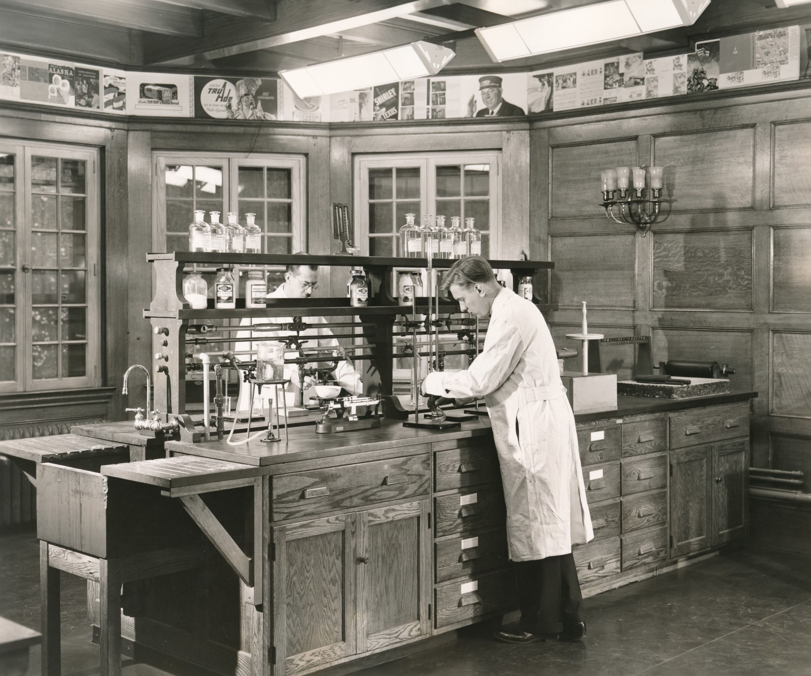
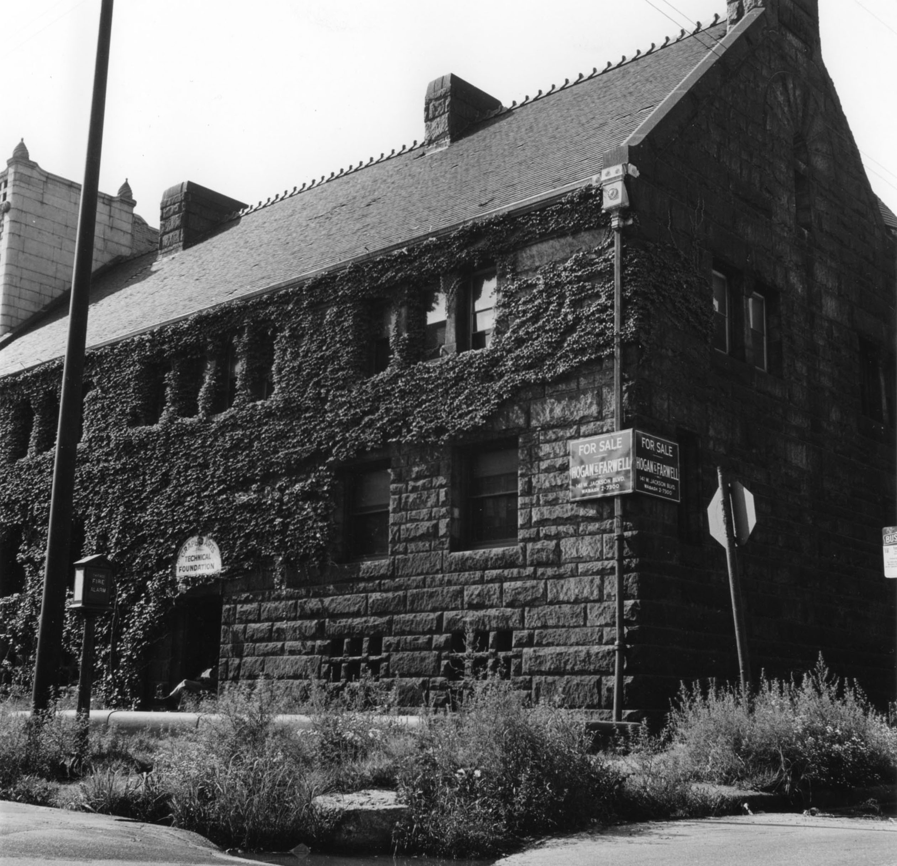
In 1938, the Glessners’ daughter donated the house to the Armour Institute (now Illinois Tech), which later leased and sold it to the Lithographic Technical Foundation, for use as its research facility. By early 1965, the Foundation announced plans to relocate to Pennsylvania, and the house was put up for sale. Although it had been designated a Chicago landmark in 1960, that designation was purely honorary and did nothing to protect the building from demolition. Preservationists, who had fought unsuccessfully to save Adler & Sullivan’s Garrick Theatre a few years earlier, feared Glessner House could be the next to fall to the wrecker’s ball.
Architect brothers Harry and Ben Weese were among the first to sound the alarm. They began working on a plan to save the building and repurpose it as a center for the study of architecture. They worked closely with New York architect Philip Johnson, who realized the significant role the house had played in the development of modern American residential architecture. In a newspaper article at the time, Johnson was quoted as saying, “Glessner house is the most important house in the country to me.”
At the same time, four men in their mid-twenties were also trying to raise funds to save the house. These four were architects Richard Wintergreen and James Schultz, who worked in the office of Mies van der Rohe, their friend Paul Lurie who had just graduated from law school, and another friend, Wayne Benjamin, who worked in the financial sector.
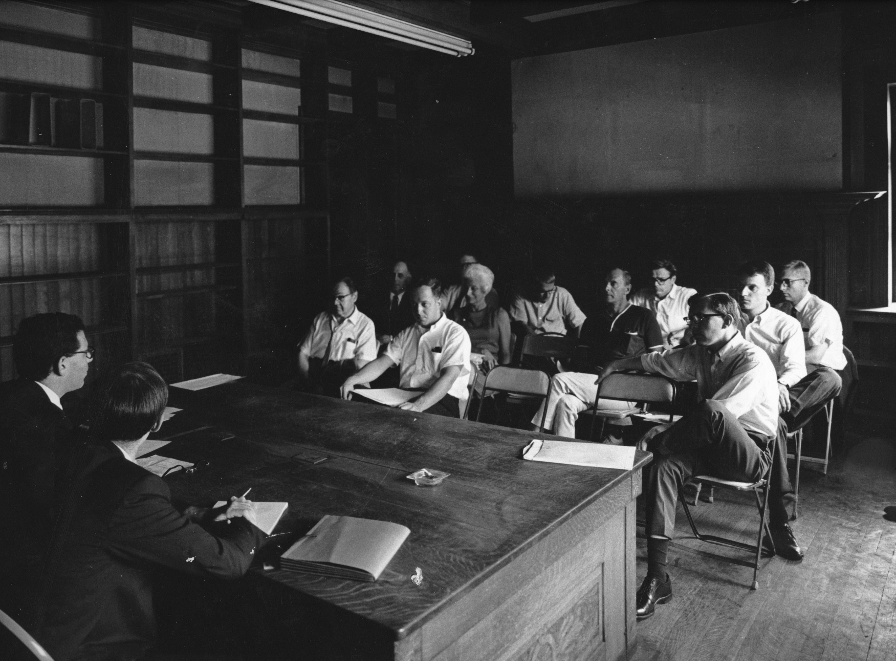
By early spring 1966, the two groups began working together and on April 16, 1966, they were among twenty individuals who signed a resolution creating the Chicago School of Architecture Foundation, with the first goal being the purchase of Glessner House. Those charter members were Wayne Benjamin, Joseph Benson, Irving Berman, Carl Condit, George Danforth, Maurice English, Wilbert Hasbrouck, Phyllis Lambert, Dirk Lohan, Paul Lurie, Dan Murphy, Richard Nickel, Herman Pundt, Earl Reed, James Schultz, James Speyer, Clement Sylvestro, Ben Weese, Harry Weese, and Richard Wintergreen.
Paul Lurie traveled to Pittsburgh to negotiate with the seller and succeeded in having the asking price lowered from $70,000 to $35,000. Funds were gathered from individuals and architectural firms, and the sale was finalized on December 14, 1966. The Foundation now owned the house, but the work was just beginning. As Ben Weese noted, “this is a landmark that will have to work for a living.”
The Work Begins
By the beginning of 1967, architect L. Morgan Yost was hired as executive director, with Susan Synikin engaged as his assistant (she later married founder Wayne Benjamin and has had a successful career as an architectural historian). There was no heat in the house, so they worked out of a converted closet in Harry Weese’s office.
Plans were quickly put in place to clear the house of all the debris left behind by the printing company and prepare a few rooms for exhibits and lectures. Other rooms were rented to allied organizations including the Historic American Building Survey, the Illinois Historic Structures Survey, Inland Architect, the newly formed Landmarks Preservation Council of Illinois (now Landmarks Illinois), and, in an ironic twist, the CCAIA, which had declined the gift of the house thirty years earlier. When a new, stronger landmarks ordinance was passed by the City Council in 1970, Glessner House was one of the first two buildings designated (the other being the Clarke-Ford House).
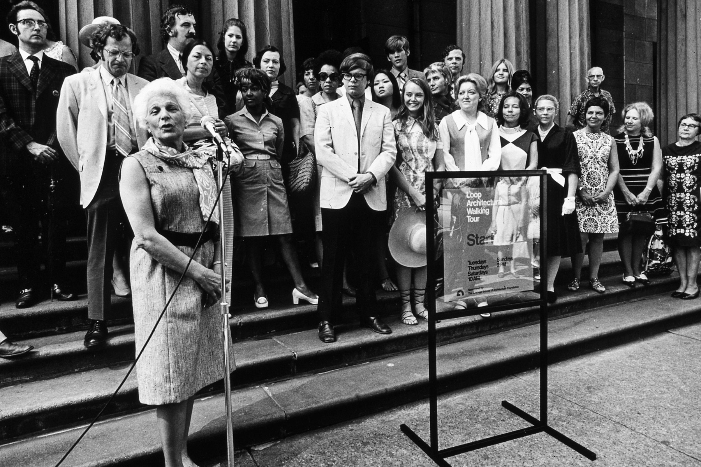
The house first opened for public tours in January 1969, with tours costing one dollar and led by the small staff. In 1971, a formalized docent program was developed, and the first class of thirty graduated on June 12 on the steps of the Chicago Public Library (now the Cultural Center); docents were trained to give tours of the house as well as downtown. The Glessner’s granddaughter, Martha Lee Batchelder, began returning original furnishings and archival materials, leading to the restoration of the first room of the house—the library—in 1974; the kitchen followed soon after. The Foundation, later renamed the Chicago Architecture Foundation (and now known as the Chicago Architecture Center), continued to expand its educational and tour offerings, opening the ArchiCenter downtown in 1976.
By the late 1980s, the Foundation had grown so significantly that there was concern that the focus had shifted away from Glessner House. A separate “Friends of Glessner House” group was organized to raise funds specifically for house projects. In 1994, the Foundation announced that the house would be spun off as a separate not-for-profit entity. Glessner House has operated independently since that time and, in the intervening three decades, has restored virtually every space in the house. It has developed into a cultural center and museum serving its once-again thriving South Loop residential community, and welcoming guests from across the country and around the world.
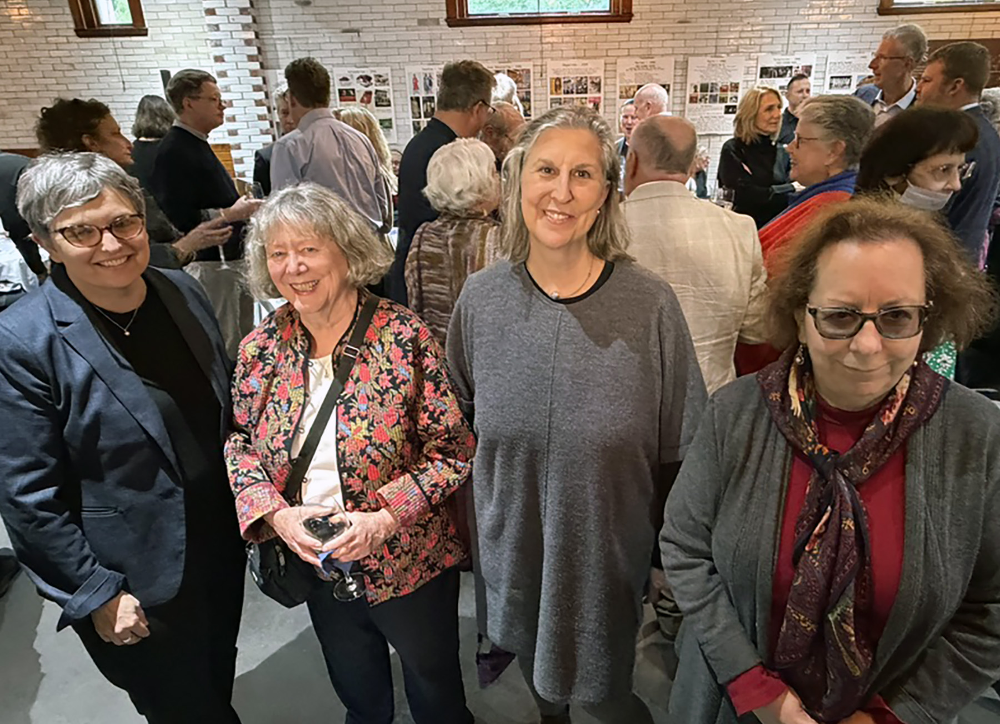
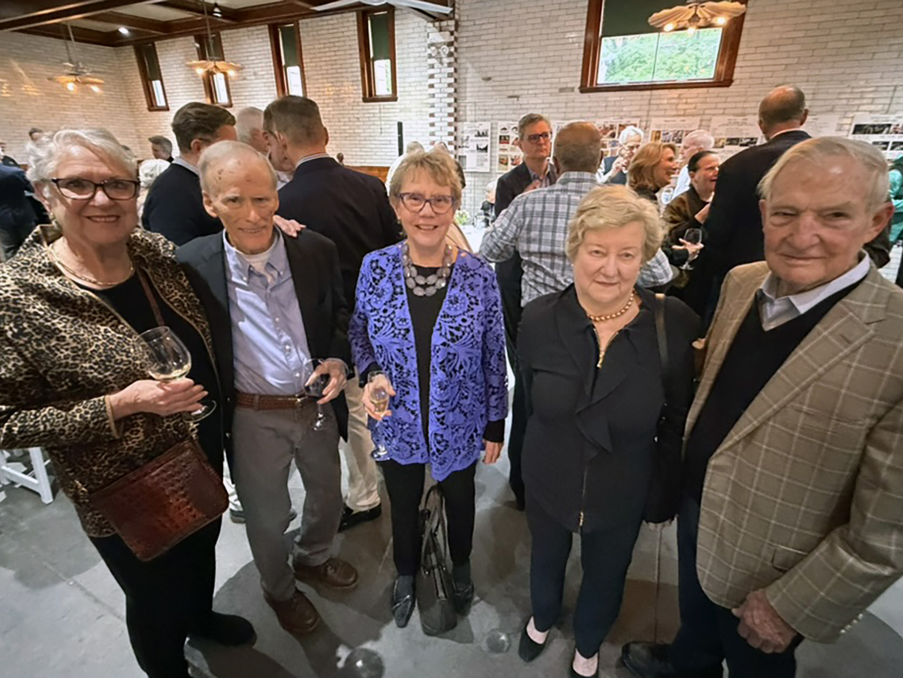
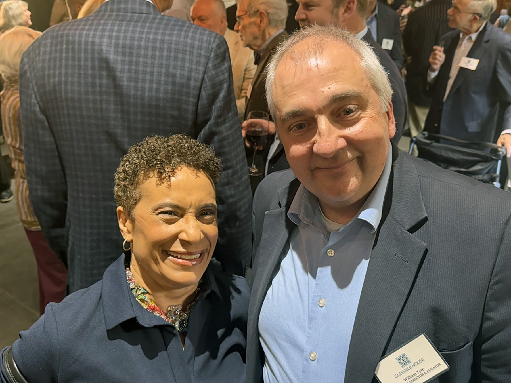
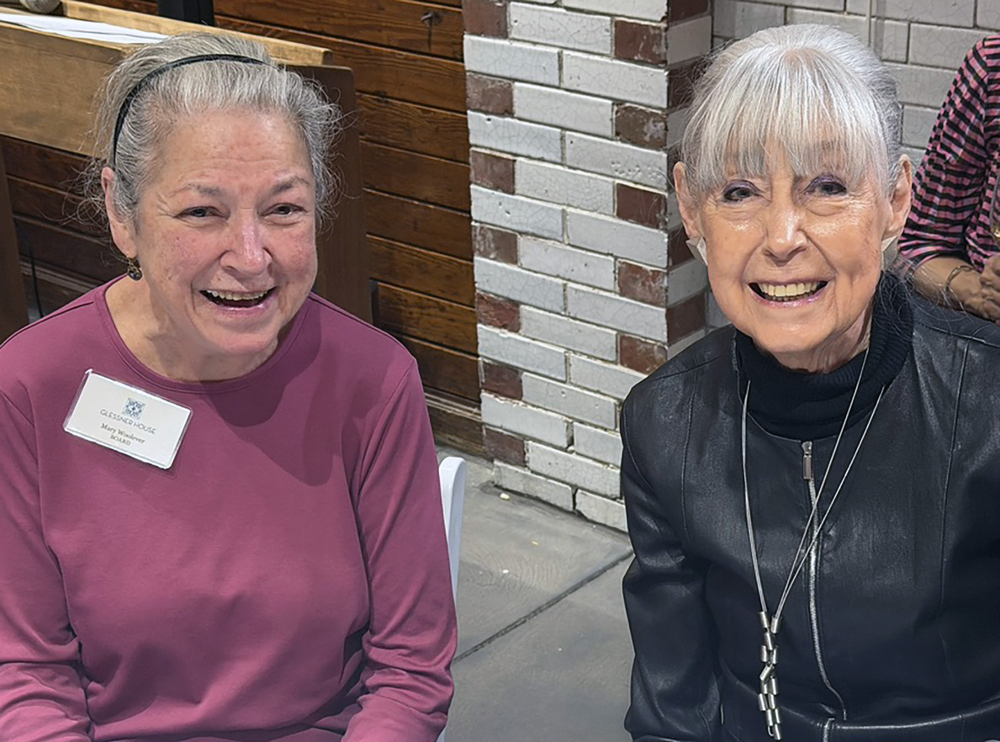
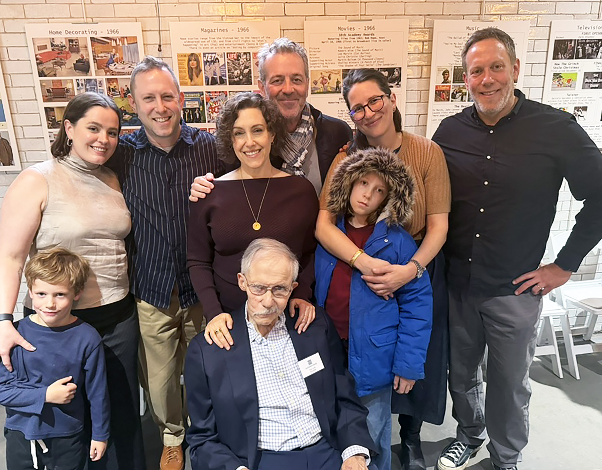
Celebrating 60 Years
At the celebration on April 29, William Tyre, Executive Director and Curator, welcomed everyone and thanked them for their faithful support through good times and bad. He acknowledged the many donors and members, board members and staff, docents and volunteers, members of the Ouroboros (planned giving) Society, the talented contractors and craftsmen, programming partners, and Glessner family members. In particular, he noted the ongoing support from several Chicago area foundations—Alphawood, Beidler, Chicago Community Trust, Driehaus, and TAWANI. Founder Paul Lurie was present at the celebration along with members of his family and received a hearty round of applause for the vision he and his friends had in saving the house in 1966.
Board President Ronald Loch spoke to the current thriving condition of the organization, noting the extensive in-person and online programming, and the evolution of the house as a cultural center offering numerous opportunities to experience the rich stories of the building, its family, collections, and preservation. He also noted the upcoming construction of an ADA-compliant ramp into the Visitors Center this fall, and the engagement of a consultant to guide the board through the creation of a new five-year strategic plan. He closed his remarks by reading a letter from Governor J. B. Pritzker commending Glessner House on its anniversary, which read, in part:
“The successful effort in 1966 to save this Henry Hobson Richardson landmark from demolition stands as a defining moment in Chicago’s preservation history. Your longevity is truly a testament to the impact and relationships you have fostered through the years. I have no doubt that your organization will continue to excel for years to come. I commend everyone at Glessner House for their hard work, dedication, and passion; your leadership in historic preservation makes your community and state a better place.”
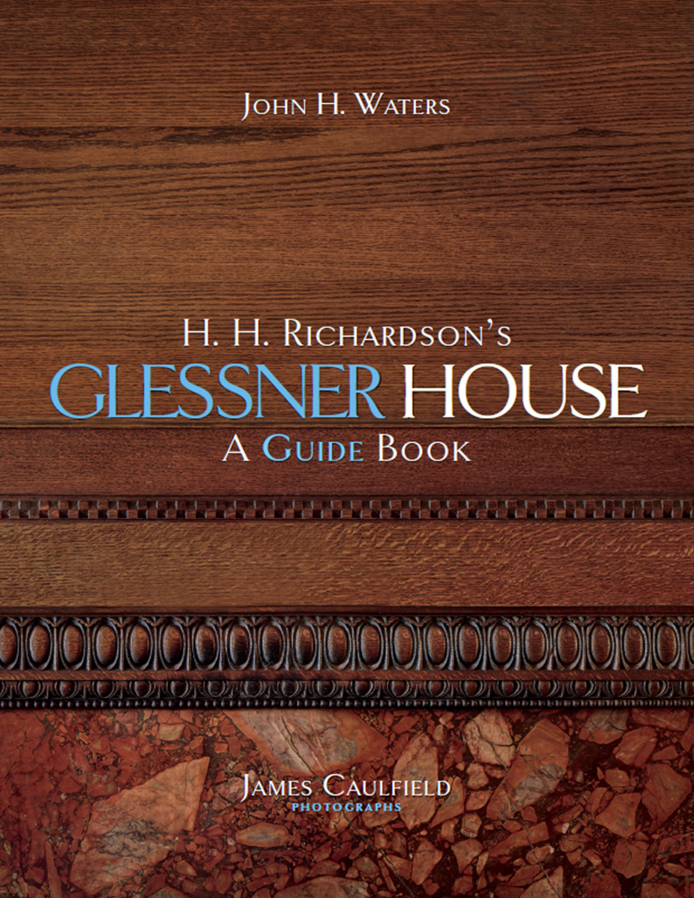
A Glessner House Guide Book
The event also served as the official release for the first ever guide book focused specifically on Glessner House. Entitled H. H. Richardson’s Glessner House: A Guide Book, the 84-page book features a text by architect John H. Waters, and spectacular newly-commissioned color photography by James Caulfield. The book, and the anniversary celebration, were generously funded by a grant from the Richard H. Driehaus Foundation. Anita Alexander, program officer with the Foundation, provided remarks on behalf of Foundation president Lynn Osmond, noting the many years of support the Foundation has provided to Glessner House in advancing its mission. The guide book is available in the Glessner House online store, with a limited number of copies signed by the author and photographer currently available; click here to purchase.
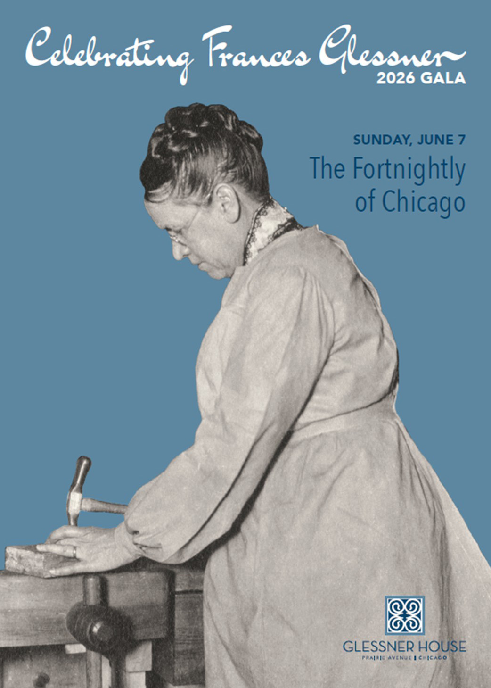
Looking Ahead
The annual gala for Glessner House, with the theme “Celebrating Frances Glessner,” will take place on the afternoon of Sunday, June 7 at The Fortnightly of Chicago. Frances Glessner, a talented craftswoman and society leader, was a member of The Fortnightly for more than fifty years. Since 1922 the club has been housed in the Georgian Revival-style Lathrop house, a Chicago landmark building designed in 1892 by Charles Follen McKim for McKim, Mead & White. At the gala, the annual John and Frances Glessner Award will be presented to Linda P. Miller, immediate past president of Friends of Historic Second Church, in recognition of her fifteen years of service to the organization which has raised more than $4 million for restoration of the National Historic Landmark Second Presbyterian Church. Limited tickets remain for the event, click here to learn more.
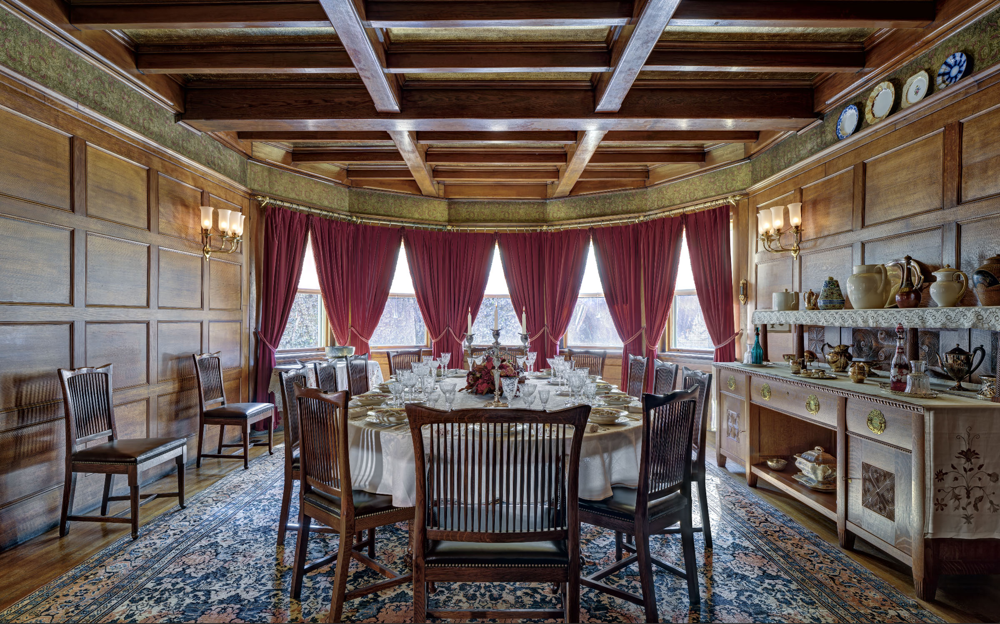
The house offers a variety of programming throughout the year, ranging from online presentations and specialized walking tours to jazz and classical concerts in its intimate courtyard and holiday events including Christmas candlelight tours. The recently restored dining room, with its meticulously recreated furniture (originally designed in Richardson’s office), is also available as a rental space and can accommodate private dinners for up to eighteen people. Visit glessnerhouse.org to learn more.